Background
IBM Storage Insights helps storage admins monitor the health and performance of their storage. Its Performance analysis feature is where admins and support engineers go when something is slow: they compare IO rate, data rate and response time across storage systems, then drill into volumes, pools and host connections to find the cause.
Problem
Investigating a slow application meant stacking windows, lining up charts by hand and remembering where you had been. Correlation across systems and components was slow, manual and error-prone, and users lost context the deeper they went.
Solution
I redesigned the feature on the Carbon Design System as a single correlation workspace: stacked charts with a synchronised tooltip, a navigation trail that records the investigation path, in-context notes and an AI layer that points to anomalies.
Walkthrough of the final design
Observe
Following IBM Enterprise Design Thinking, I started by understanding the current experience and the people using it.
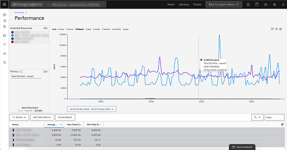
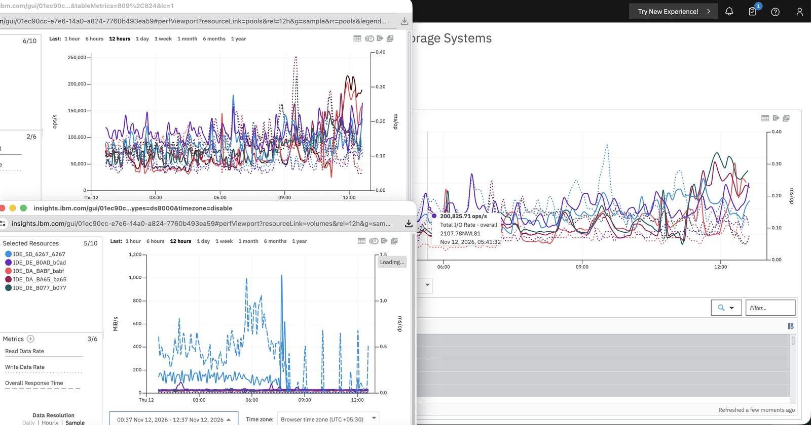
Usability evaluation
I reviewed customer requests for enhancement and evaluated the existing Performance feature. Five issues kept coming up:
- Lack of contextual clarity: users were unsure which systems and time period they were viewing, and drill-downs did not show their scope.
- Overloaded visuals: dense charts, scattered controls and unclear legends raised cognitive load.
- Inconsistent interactions: metric and time selection behaved differently in charts and tables.
- Fragmented navigation: related analysis opened in separate, unsynchronised windows.
- Actions far from data: column selection, reporting and export sat away from the content they acted on.
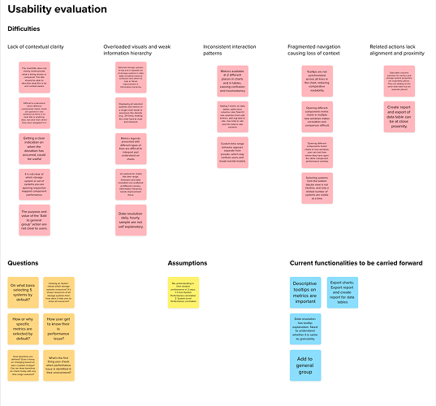
As-is journey
To see where the experience breaks down, I mapped a fleet-level performance investigation.
Persona: a storage admin or support engineer.
Scenario: an application team reports slow response time.
| Stage 1Problem intake | Stage 2Fleet-level scan | Stage 3Cross-metric validation | Stage 4Component isolation | Stage 5Conclude & share | |
|---|---|---|---|---|---|
| Thinking | “Is this storage-wide, or a few systems?” | “Where do I see abnormal behaviour?” | “Is this a real issue or a metric anomaly?” | “What inside the system is causing this?” | “Am I confident enough to act or escalate?” |
| Doing | Forms a hypothesis: latency spike, IO saturation or bandwidth issueOpens fleet-level performance | Selects IO rate, latency and data rateFilters to systems with high latencyScans for spikes and drops | Correlates latency spikes with IO saturation or throughput dropsUses tooltips to compare values | Opens volume or host performance, each in a new windowMoves from system to volume to host metrics | Confirms root causeExports data or creates a reportShares findings |
| Trying to | Match the chart timeframe to when the app issue happened | Spot which systems behave differently | Line up latency, IO rate and data rate at the same timestamp | Place component windows side by side to compare | Export reports from each window and share them |
| Pain points | No quick way to align the reported issue time with visible deviations | Too many systems and metric lines in one viewVisual overload makes correlation slow | Tooltips are not synchronisedValues aligned manually across charts | New windows break the flowUsers lose track of which window shows what | No clear closure to the investigationExport options at several levels distract from insights |
Scroll sideways to see all five stages
Users relied on manual correlation across systems and components, and lost context the deeper they went.
Define
Turning what I observed into clear problems, user outcomes and a flow to design against.
Hills
Following IBM Enterprise Design Thinking, I wrote Hills to turn problems into user outcomes. They aligned stakeholders on what success looks like and guided every design decision.
One workspace
Storage admins and support users can analyse metrics across multiple systems and their mapped components in one structured workspace, so that they spot abnormal behaviour quickly without switching windows or aligning views by hand.
Never lose context
Storage admins and support users can correlate metrics across systems and components while seeing where their investigation started and where it went, so that they can go deep into an issue without losing context.
User flow
The end-to-end journey from spotting an anomaly at fleet level to a deep system investigation. It became the reference for designing screens.
Top 6 systems by selected metric
System vs component metrics
added after validation
Risks & constraints
Reviewing the flow with stakeholders surfaced three constraints the design had to respect.
System unavailability
Some storage systems can be temporarily unreachable because of data collection issues.
Data latency
Performance data comes through a mini-probe with about a 5-minute delay, so it is never real time.
Missing components
Hosts or switches may not be onboarded or monitored, which can limit end-to-end correlation.
Make
Exploring ways to bring systems, components and context into one place.
Solutions explored
With the Hills as guardrails, I explored layouts on the whiteboard: stacked versus combined charts, where the navigation trail should live, and how users pick components. The strongest ideas moved into mid-fidelity wireframes.
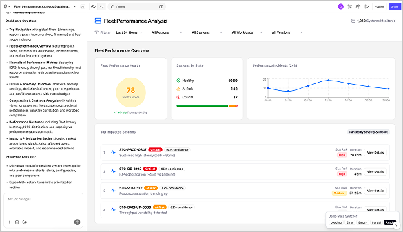
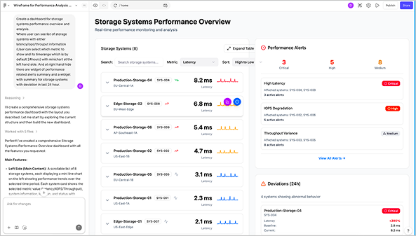
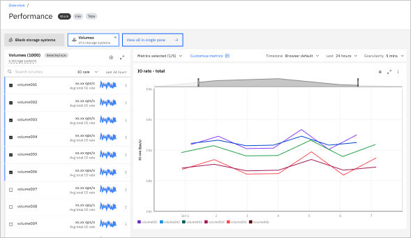
Validate
Testing mid-fidelity designs with users, then walking executives through them.
What changed the design
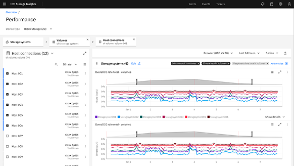
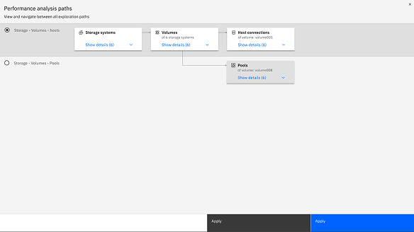
What users said
“I could use this to train a junior team member.”
On the navigation trail, which drew the strongest reaction. Also useful to show application owners how the issue was found.
Sponsor user“I like this… it’s better than what we had before.”
On the correlation view, bringing systems and mapped components into one screen.
Sponsor userStacked charts with a synced tooltip beat one combined chart.
Feedback on showing metrics in a vertical stack.
Support userDeliver
Final designs, each answering a problem from the audit, documented for the development team.
Default view
Fleet-level performance analysis
The default view shows six storage systems, chosen dynamically by top IO rate, data rate or response time, so users compare them at a glance and spot outliers.
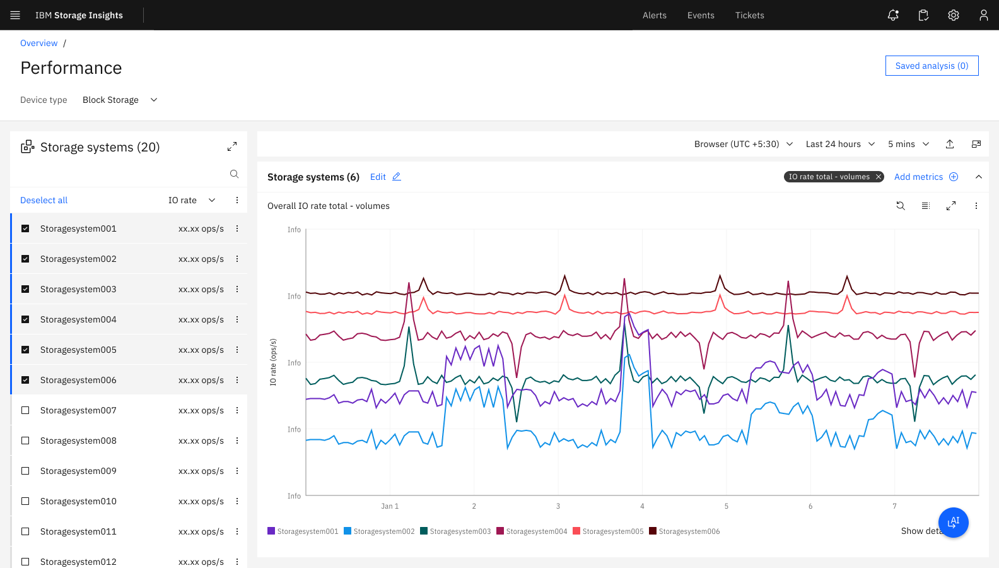
Correlation
Performance correlation view
System performance and its components sit in one view, with each metric in a vertical stack for easy comparison. The analysis path stays on screen instead of spreading across tabs.

Navigation trail
Analysis navigation trail
The trail records the full investigation path step by step, so users see how they reached an insight, jump back to any point and stop managing tabs. It was the most appreciated feature in testing.
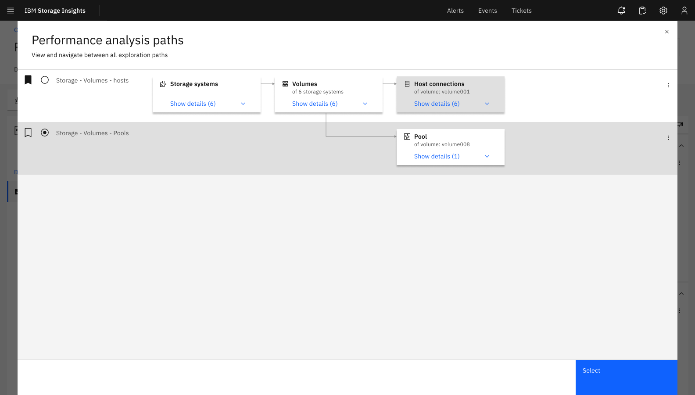
AI layer
AI-assisted analysis
An AI layer highlights anomalies and guides users to areas that need attention. Users can describe a problem in plain language, such as a slow application, and the assistant points to the likely component and opens a curated correlation path.
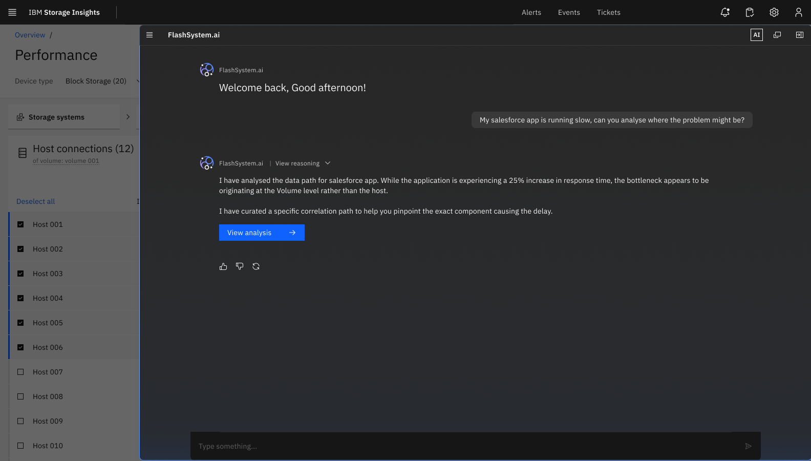
Saved analysis
Save, annotate and revisit analysis
Users can save an analysis path and add notes to it, capturing what they found right where they found it instead of in external tools. They can reopen it later from the Saved analysis panel to pick up the investigation or share how it was done.
Notes started as a separate panel, but it overlapped with saving. Merging them kept one place to record an investigation.
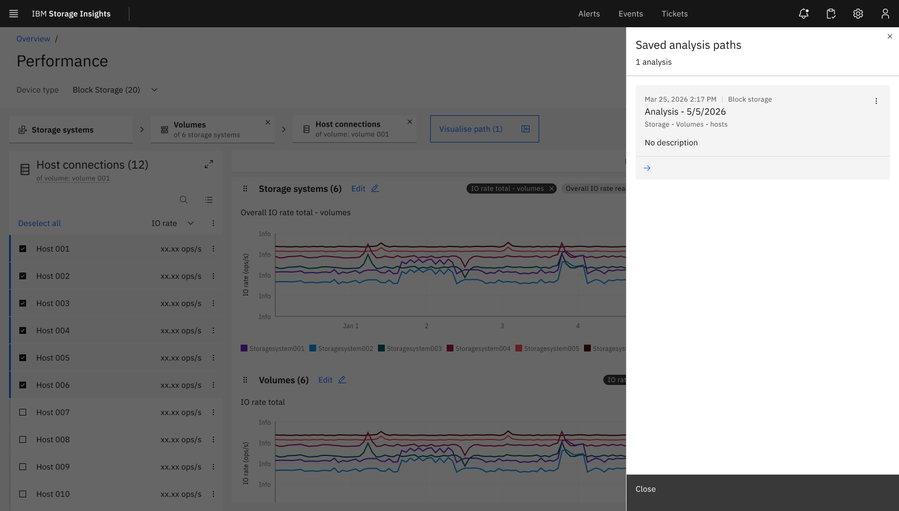
Synchronised tooltip
Compare values at one moment
One hover shows values at the same timestamp across every stacked chart, so users no longer line up values by hand.
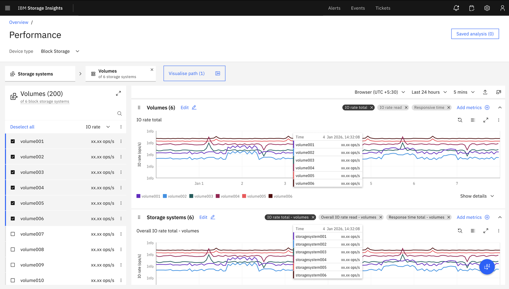
Deviations
Deviation visualisation
Shaded bands and markers show when and where metrics move away from normal, with a tooltip that links to more detail.
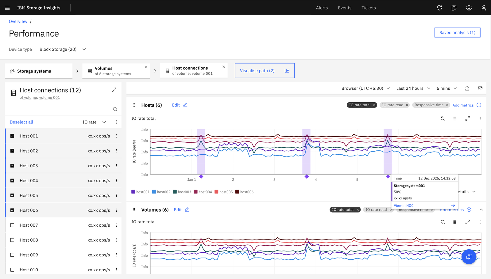
Dev handoff
I documented the final designs for the development team on Carbon components: screen specs and states, interaction rules for synced tooltips and the trail, and edge cases for unreachable systems, delayed data and unmonitored components.